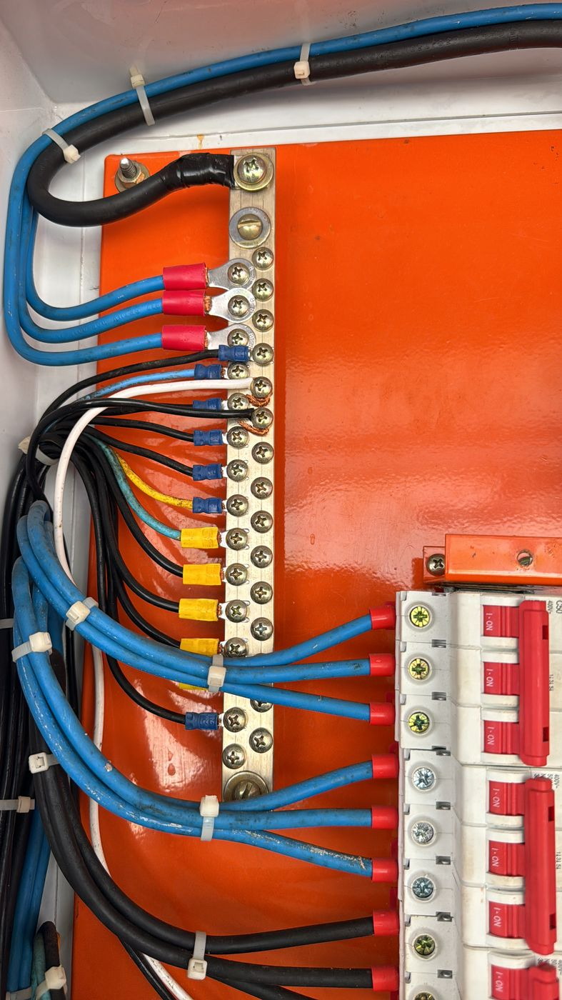
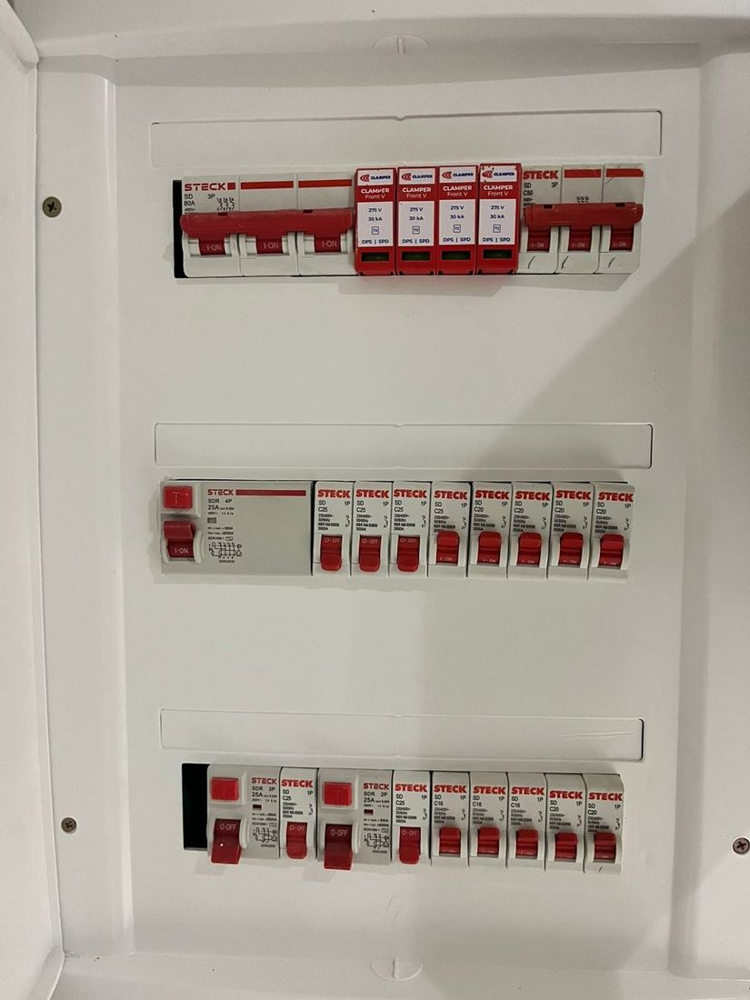
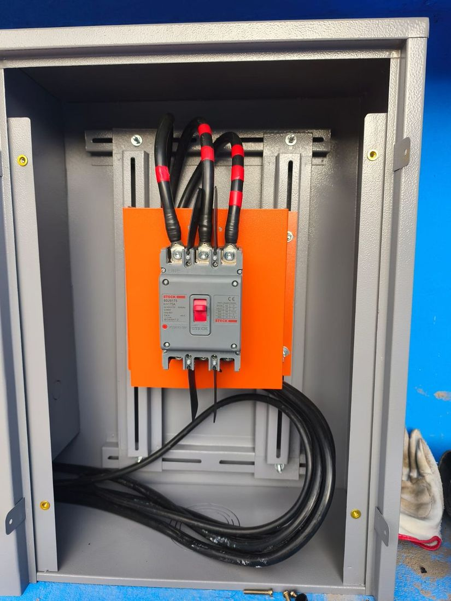
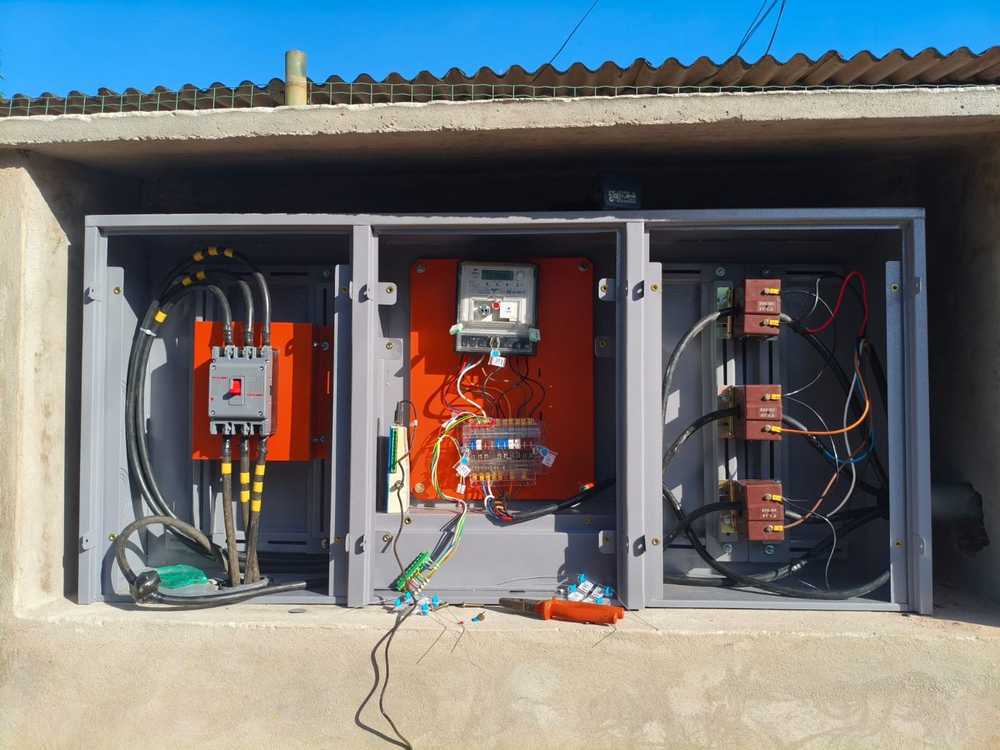

Instalações e quadros
Instalação elétrica completa, quadros de distribuição e QGBT, com circuitos identificados.
Instalações elétricas, quadros e EMUC
Executamos instalações elétricas prediais, comerciais e industriais, com projeto, quadros, medição e ART.

O escopo exato de cada obra vem na proposta.
Qual serviço é o seu?
Cada obra tem a sua mistura. Na visita técnica montamos o escopo.
Instalação elétrica completa, quadros de distribuição e QGBT, com circuitos identificados.
Centro de medição para condomínios, centros comerciais e prédios com várias unidades.
Atualização de quadros, cabos e proteções de instalações antigas, com mais segurança.
Como funciona
O prazo depende do porte da obra. Você acompanha o andamento e é avisado a cada mudança.
Obras



Normas
A instalação e a medição seguem as normas ABNT e as exigências da concessionária.
É a medição coletiva: um centro de medição que atende várias unidades consumidoras, como as de um condomínio, de um centro comercial ou de um prédio. Projetamos, aprovamos na Equatorial e instalamos.
Depois que o projeto completo é protocolado, a Equatorial tem até 30 dias para analisar (NT.002 da Equatorial). Com a Voltarc cuidando do processo, o caminho todo costuma levar até cerca de 60 dias. Com um profissional ou empresa despreparada, é comum o processo se arrastar por meses.
Podemos fornecer e montar os quadros e o QGBT, ou montar com material do cliente. Combinamos isso na proposta.
Depende do porte e do escopo, então não há preço fechado sem conhecer o caso. Mande os dados pelo WhatsApp e retornamos com a proposta.
Tipo de imóvel, cidade e o que precisa ser feito já bastam para começar.